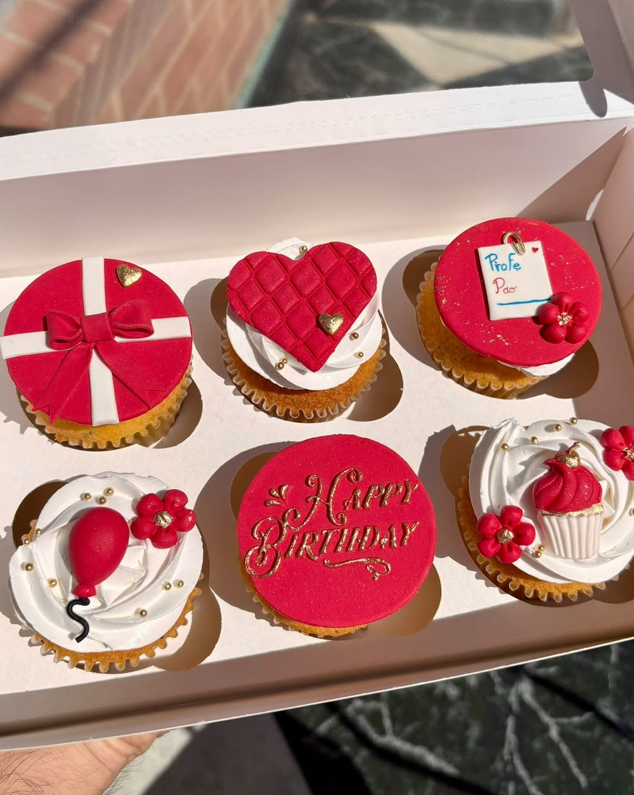
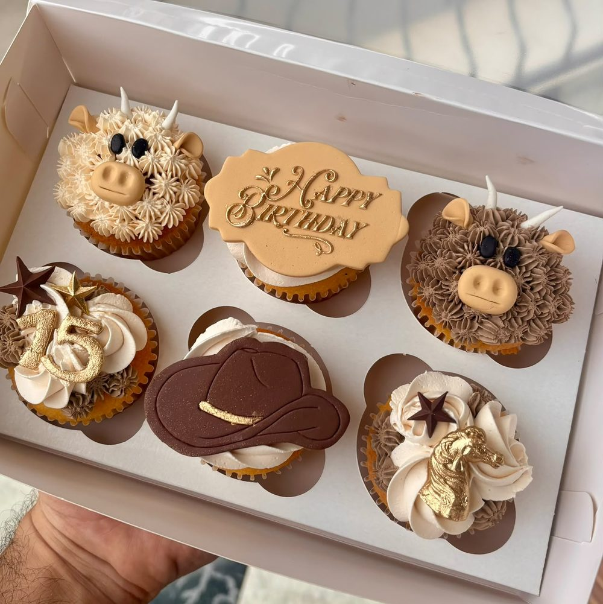
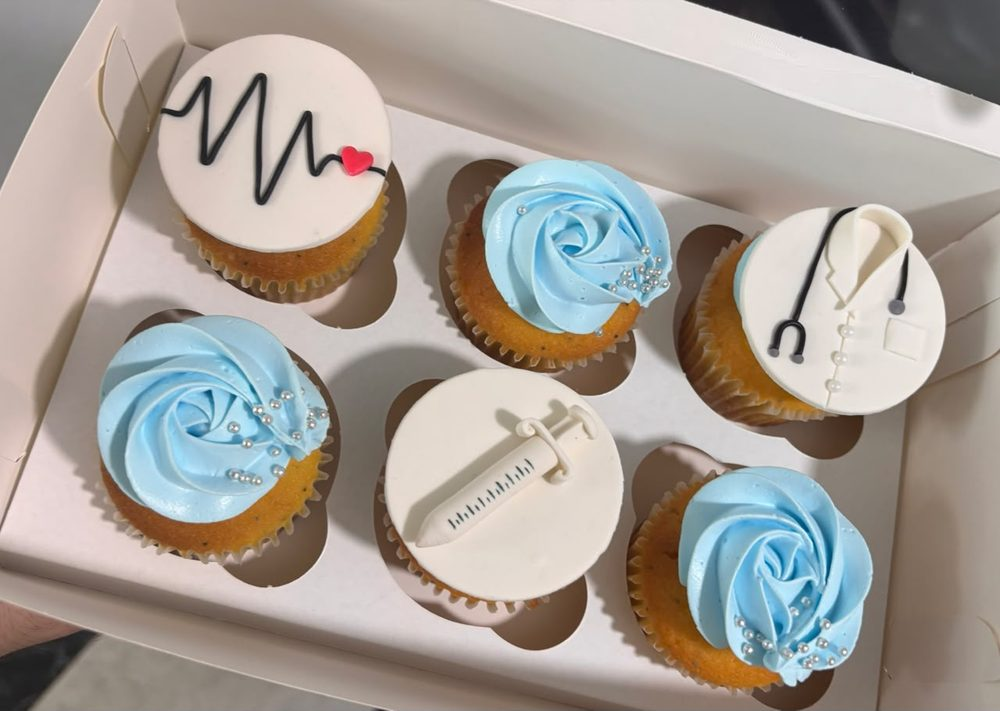
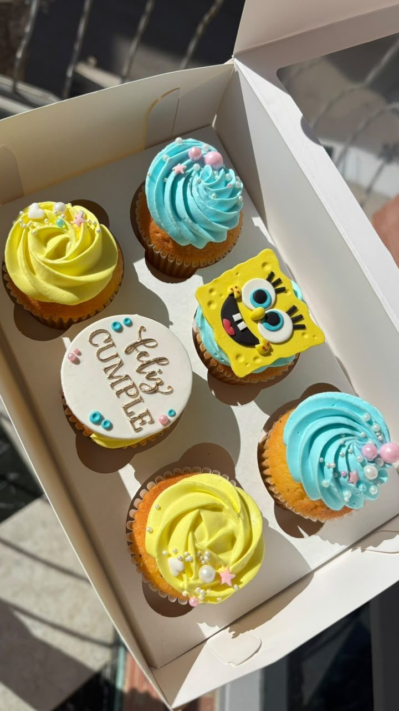
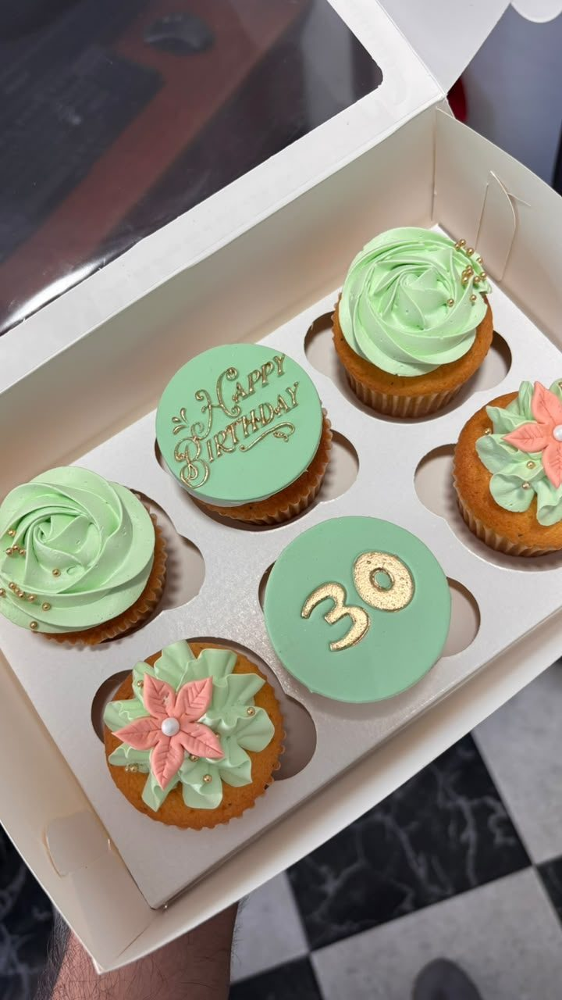
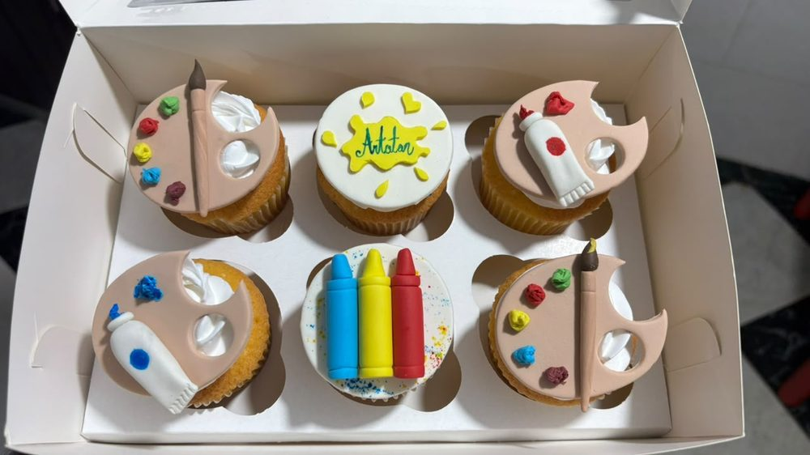
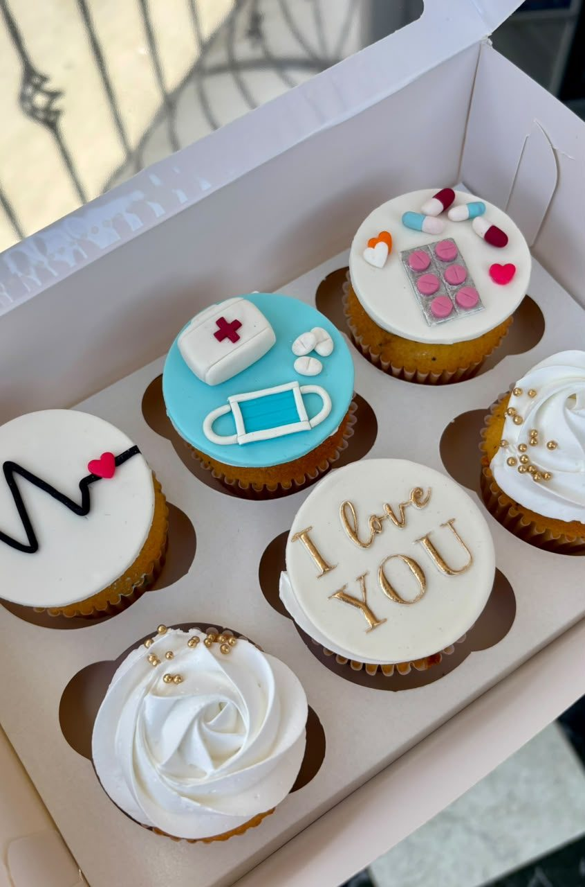
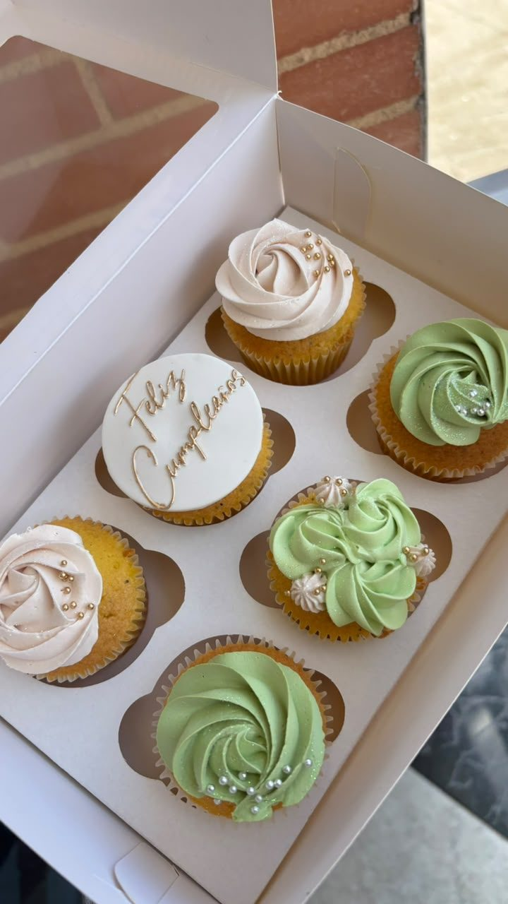
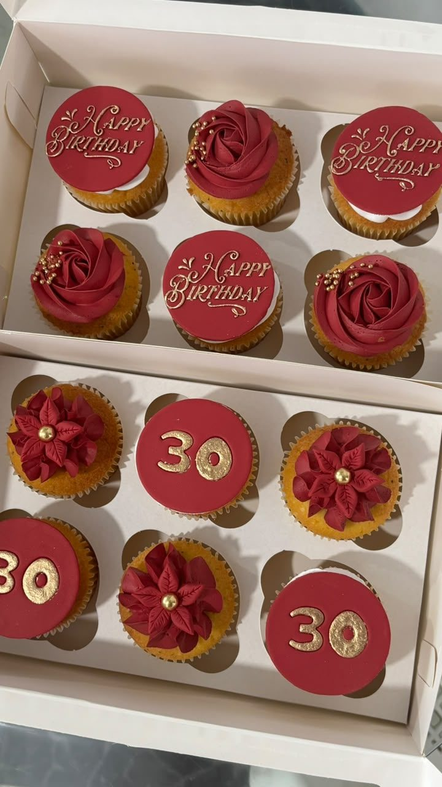

Caja sencilla
6 cupcakes decorados en crema, en 2 colores en tonos pastel.
$25.000 / caja de 6 Pedido con 1 día de anticipación.Dulce a tu manera
Sabores fijos, decoración a tu gusto — para regalar o para celebrar en grande.
Cajas de 6 unidades, hechas para tu ocasión.
Un cupcake es el detalle perfecto: pequeño, bonito y de un solo bocado. Elige tu sabor, elige tu estilo y nosotros nos encargamos de que cada caja se sienta como un regalo.
Bizcocho de naranja con semillas de amapola.
Bizcocho de limón con semillas de amapola.
6 cupcakes decorados en crema, en 2 colores en tonos pastel.
$25.000 / caja de 6 Pedido con 1 día de anticipación.Decoración personalizada en fondant, creada a la medida del tema que quieras celebrar.
Desde $30.000 / caja de 6 Pedido con 2 días de anticipación.Puedes recoger tu caja en la puerta de la pastelería, en Moniquirá, o pedirla a domicilio. El valor del domicilio no está incluido en el precio.
Estas fotos son solo una guía de lo que podemos hacer. Cada diseño lo creamos a mano y a tu medida, por eso no podemos replicar diseños de otras personas ni imágenes creadas con inteligencia artificial. Cuéntanos tu idea, tu tema y tus colores, y la hacemos tuya.









¿Un evento, una empresa o un detalle para todo el equipo? También preparamos cupcakes en mayores cantidades. Escríbenos y lo cotizamos.
Dos tamaños: 10 y 20 porciones.
Las tortas De la Casa están pensadas para saber a infancia: a ese pastel de la mesa familiar, a cocina con olor a horno y a la sensación de que todo está bien. Sabores de casa, hechos con ingredientes de verdad y vestidos con un acabado que los vuelve especiales.

Pastel suave de limón con arándanos, relleno de compota de frutos del bosque, crema ligera de queso y crema de frutos rojos.

Torta especiada y húmeda que recuerda los sabores de casa, con frosting de queso, decorada con frutos secos y zanahorias dulces.

Pastel chocolatoso de miga húmeda, con ganache semiamarga de chocolate real y decoración clásica.
¿Tu celebración tiene fecha? Escríbenos y reservamos tu pastel; lo recoges en la puerta de la pastelería, en Moniquirá.
Pedir por WhatsApp